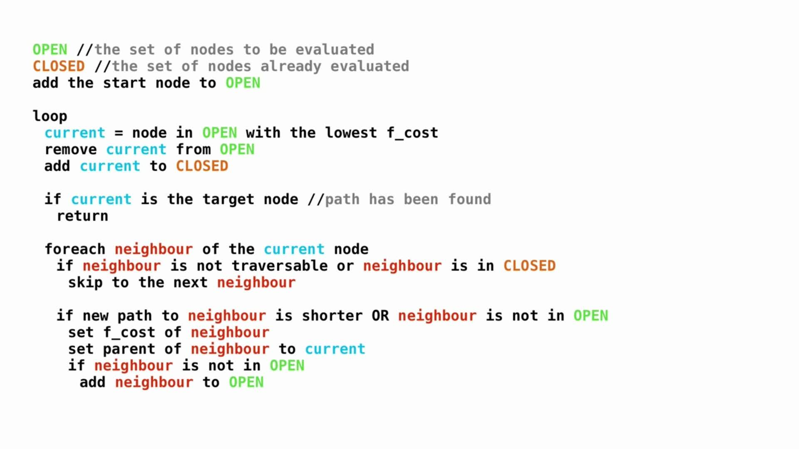

Manhattan distance
Manhattan distance, also named L1-Distance or City Blocks distance, means the summary of two right-angle side in Cartesian coordinate system. For example, now we have two point: (x1, y1) and (x2, y2). Two points above in the same flat, so the Manhattan distance of these two points is: d = abs(x1 - x2) + abs(y1 - y2).
Euclid distance
Briefly speaking, Euclid distance calculates the true distance between two points, we still use the example in Mahattan distance, the Euclid distance of (x1, y1) and (x2, y2) is sqrt((x1 - x2)^2 + (y1 - y2)^2).
What is A* ?
In A* Algorithm, we define g(n) as the cost from start point to point N, h(n) as the cost from N to destination point. And define f(n) = g(n) + h(n).
A*算法总结(In Chinese)
1. 把起点加入 open list.
2. 重复如下过程：
a. 遍历open list ，查找F值最小的节点，把它作为当前要处理的节点，然后移到close list中.
b. 对当前方格的 8 个相邻方格一一进行检查，如果它是不可抵达的或者它在close list中，忽略它。否则，做如下操作：
□ 如果它不在open list中，把它加入open list，并且把当前方格设置为它的父亲;
□ 如果它已经在open list中，检查这条路径 ( 即经由当前方格到达它那里 ) 是否更近。如果更近，把它的父亲设置为当前方格，并重新计算它的G和F值。如果你的openlist是按F值排序的话，改变后你可能需要重新排序.
c. 遇到下面情况停止搜索：
□ 把终点加入到了 open list 中，此时路径已经找到了.
□ 查找终点失败，并且open list 是空的，此时没有路径.
3. 从终点开始，每个方格沿着父节点移动直至起点，形成路径。